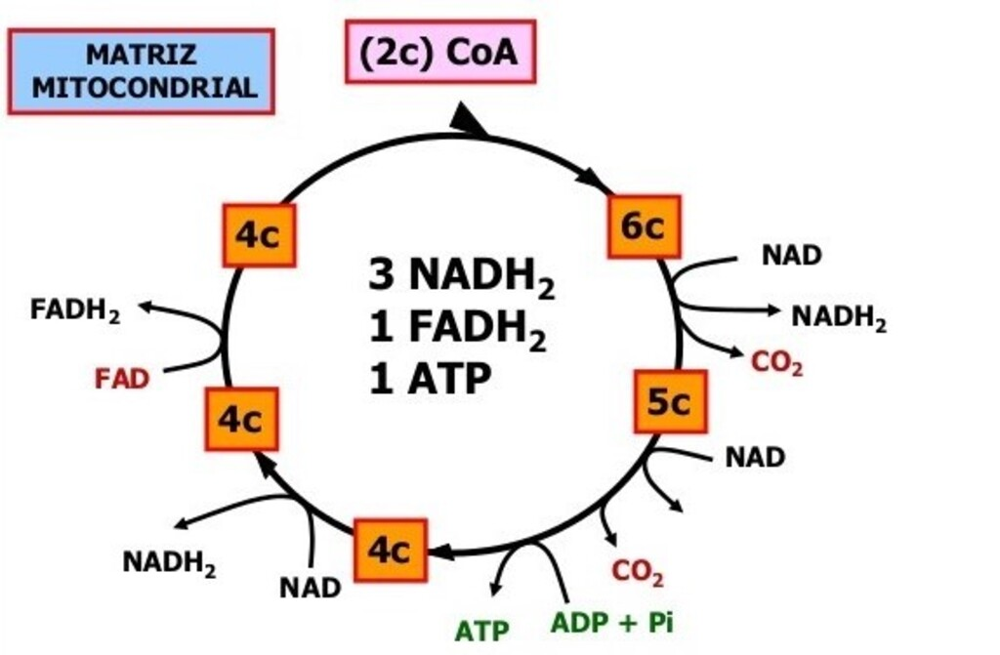

Ciclo de Krebs
Nessa reação forma-se o AcetilCoA, cada molécula de AcetilCoA reage com uma molécula de oxalacético, onde é liberada a coenzima A formando ácido cítrico, nessa reação ocorre em um ciclo de oito reações, onde é liberado 2 CO2, elétrons, e íons H+. Ao final, forma-se novamente ácido oxalacético, que pode e combinar com outro AcetilCoA. Durante o ciclo de Krebs, elétrons de alta energia e íons de H+ são captados por moléculas de NAD+, que se transforma em NADH. Também participa do ciclo de Krebs um outro aceptor de elétrons, o FAD, que transforma em FADH2. Nessa reação, são formados 3 NADH e 1 FADH2 e 2 ATP.



Entre em contato conosco através dos contatos:


Um pouco de biologia